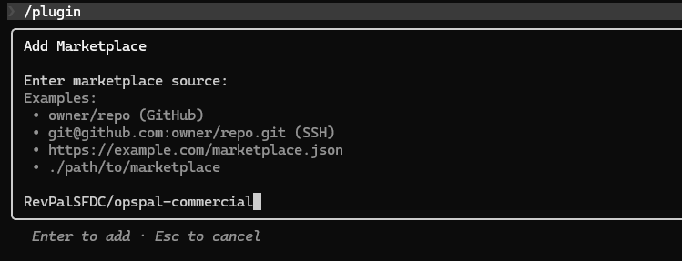
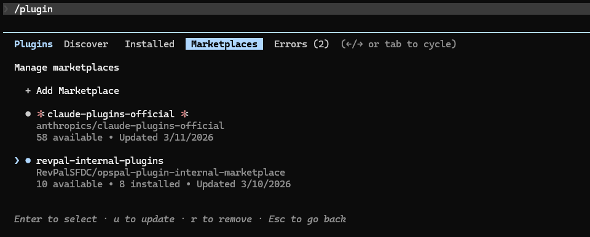
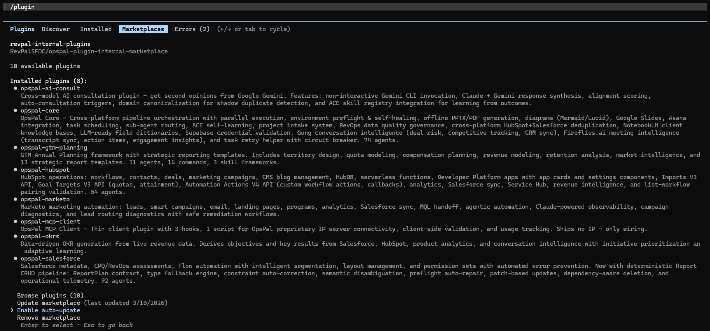
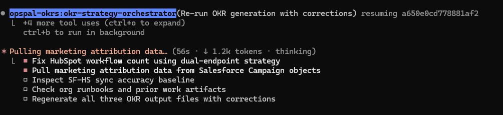
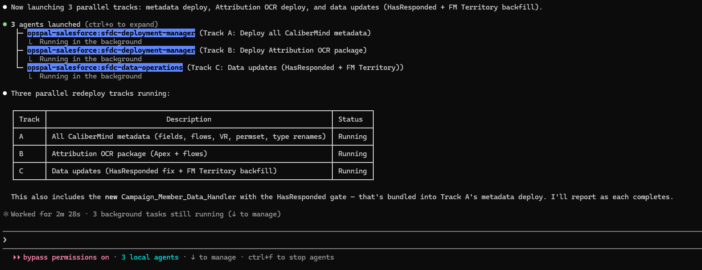
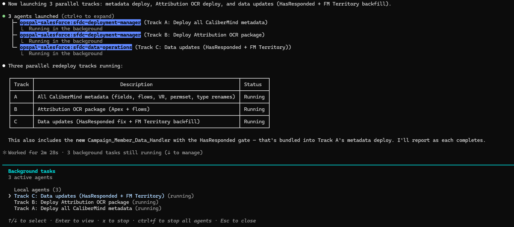
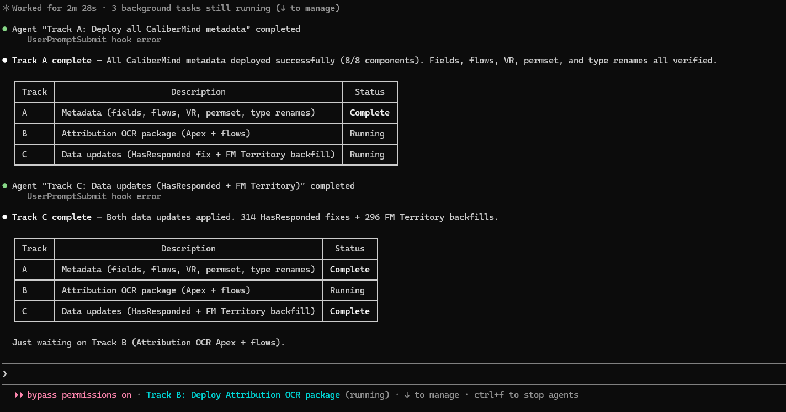
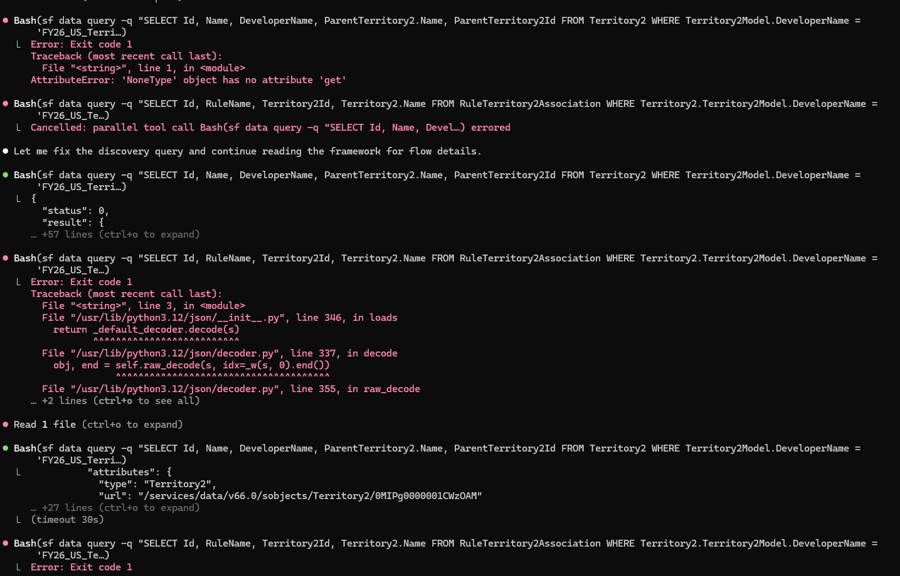

OpsPal Support Center
Step-by-step setup guides with screenshots, troubleshooting tips, and suggested prompts to get the most out of OpsPal.
Getting Started
Install OpsPal plugins into Claude Code from the RevPal marketplace. Add the marketplace, browse plugins, and enable auto-update in minutes.
Pilot Program
You have full access to OpsPal during your pilot. Weekly activities and evaluation criteria to measure real impact on your team.
Prompts to Start
Plain-language prompts for Salesforce, HubSpot, Marketo, GTM, and cross-platform operations to demonstrate value quickly.
Tips & Tricks
Planning mode, extended thinking, plugin updates, and keyboard shortcuts to get the most out of Claude Code.
Troubleshooting
Recognize sub-agent execution, diagnose routing issues, and know what to do when agents aren't picking up tasks.
OpsPal Concepts
How session reflections, operational runbooks, and continuous learning make OpsPal smarter over time.
What's New
Weekly release notes covering new features, improvements, and fixes across all OpsPal modules. See what shipped this week.
Getting Started
Everything you need to install, configure, and start using OpsPal with your team.
Before installing OpsPal, make sure you have:
- Claude Code installed — see Claude Code quickstart
- Node.js 22+ — nodejs.org
- Git — pre-installed on macOS/Linux. Windows users: see note below.
bash shell used by the OpsPal installer and is also required by Claude Code itself.
The PowerShell installer below will attempt to install it automatically via winget.
Choose the command for your platform. The installer adds the OpsPal marketplace, enables auto-update, and installs the full plugin suite.
Open Terminal (macOS) or your shell (Linux) and run:
curl -fsSL https://opspal.gorevpal.com/bootstrap-opspal.sh | bash
Dry-run first? Append: bash -s -- --dry-run
Open your WSL terminal (Ubuntu, Debian, etc.) and run:
curl -fsSL https://opspal.gorevpal.com/bootstrap-opspal.sh | bash
Same command as macOS/Linux — WSL provides a full bash environment.
Open PowerShell and run:
irm https://opspal.gorevpal.com/bootstrap-opspal.ps1 | iex
winget if missing, then runs the
bash bootstrap automatically. No manual Git install needed.
If you already have Git for Windows, you can also run (use the full Git Bash path — bare bash may invoke WSL):
"C:\Program Files\Git\bin\bash.exe" -c "curl -fsSL https://opspal.gorevpal.com/bootstrap-opspal.sh | bash"
Open Command Prompt and run:
"C:\Program Files\Git\bin\bash.exe" -c "curl -fsSL https://opspal.gorevpal.com/bootstrap-opspal.sh | bash"
bash.
Typing bare bash may invoke WSL instead of Git Bash — WSL cannot see Windows Node.js or Claude Code, causing all plugin installs to fail.
Requires Git for Windows. If you don't have it, use the PowerShell method instead — it installs Git automatically.
Open Git Bash (search "Git Bash" in the Start menu) and run:
curl -fsSL https://opspal.gorevpal.com/bootstrap-opspal.sh | bash
Same command as macOS/Linux — Git Bash provides a full bash environment.
If you prefer the guided UI flow instead, add the marketplace manually:
- Open Claude Code and type
/plugin - Select Add Marketplace
- Enter the marketplace source:
RevPalSFDC/opspal-commercial - Press Enter to confirm

- After adding the marketplace, navigate to the Marketplaces tab
- Select
opspal-commercialto view available plugins - Browse the catalog — 10 plugins available covering Salesforce, HubSpot, Marketo, GTM, OKRs, and more
- Select a plugin and press Enter to install
- Recommended install order:
opspal-corefirst, then platform-specific plugins


- /plugin → Marketplaces → select marketplace → Browse plugins
- /agents — Verify installed agents after restart
- From the marketplace detail view, scroll to the bottom
- Select Enable auto-update
- This ensures your plugins stay current with the latest agents, commands, and safety hooks without manual intervention
- /plugin → Marketplaces → select marketplace → Enable auto-update
How to Know Sub-Agents Are Working
When OpsPal routes a task to a specialist sub-agent, you'll see visual indicators in the terminal. Complex tasks often launch multiple agents in parallel — here's what that looks like and how to monitor progress.
When OpsPal kicks off a task, you'll see the agent names highlighted (e.g., opspal-salesforce:sfdc-deployment-manager) with a summary of what each is doing. The status bar at the bottom shows the active agent count and keyboard shortcuts.

For larger operations, OpsPal launches multiple agents in parallel. Don't worry if the terminal looks idle — the agents are working in the background. The status bar shows "3 local agents" (or however many are active) and you'll see a summary table tracking each work stream.

Press ↓ (down arrow) to open the Background tasks panel. This shows every active agent, its description, and whether it's running or complete. Use the arrow keys to select a task and press Enter to view its details, or Esc to close.

↓ to manage, arrow keys to navigate, Enter to inspectEach agent posts its results to the main conversation as it finishes. You'll see completion messages with summaries (e.g., "Track A complete — 8/8 components deployed") and the status table updates in real time. No need to poll or check manually.

When Agents Aren't Routing Correctly
Occasionally, Claude Code may attempt to handle a task directly instead of routing it to a specialist sub-agent. You'll recognize this when you see a pattern of repeated Bash command errors and retries — the terminal will show red error output, failed CLI commands, and multiple reattempts of the same operation. This typically means Claude is trying to do the work itself rather than delegating to the right specialist.

What it looks like
- Repeated
Bashtool calls that fail with CLI errors - Multiple retry attempts of the same command with slight variations
- Direct
sf,curl, ornodecommands instead of agent delegation - No agent names appearing in the status bar or task breakdown
The fix
Simply remind it. Most of the time, a short nudge is all it takes:
- "Use your sub-agents"
- "Route this to the appropriate specialist agent"
- "Don't do this directly — delegate to the right agent"
This is normal behavior — it happens occasionally, especially in long sessions or after context compaction. The reminder reactivates the routing logic and the correct agent will pick up the task.
If you don't see agent routing happening when you expect it, try these prompts to trigger specific agents:
- "Run a RevOps audit on my Salesforce org" — Triggers sfdc-revops-auditor
- "Assess my HubSpot portal health" — Triggers hubspot-assessment-analyzer
- "Audit automation conflicts in my org" — Triggers sfdc-automation-auditor
- "Generate OKRs from my revenue data" — Triggers okr-strategy-orchestrator
Prompts to Get Started
Just describe what you need in plain language. OpsPal routes to the right specialist automatically.
- "Run a full audit of my org and tell me what needs attention"
- "What automation is running in my environment and are there any conflicts?"
- "Show me the current state of my data quality"
- "What permission issues exist and how should I clean them up?"
- "Analyze my pipeline and flag anything that looks off"
- "Help me build a report that shows [metric] by [dimension]"
Assessments & Diagnostics
- "Run a RevOps assessment on my Salesforce org"
- "Assess my CPQ configuration and identify risks"
- "Audit all automation — flows, triggers, workflow rules — and find conflicts"
- "Check my permission sets for sprawl and overlap"
Building & Deploying
- "Create a validation rule that prevents [condition]"
- "Build a flow that [describes business logic]"
- "Design a dashboard for [audience] showing [KPIs]"
- "Deploy my metadata changes to production with validation"
Portal Health & Analysis
- "Run a full portal assessment and score my HubSpot health"
- "Audit my workflow automation and flag anything broken or redundant"
- "Analyze my lead scoring model and recommend improvements"
- "Check my Salesforce-HubSpot sync for issues"
Operations & Optimization
- "Find and merge duplicate contacts in my portal"
- "Build a workflow that [describes desired automation]"
- "Audit my SEO and content performance"
- "Set up a lead routing workflow for [criteria]"
Instance & Campaign Health
- "Discover my Marketo instance — programs, campaigns, and configurations"
- "Audit my campaign automation for conflicts and dependencies"
- "Run an email deliverability audit across my active programs"
- "Assess lead quality and scoring model effectiveness"
Execution & Data
- "Build a lead scoring model with behavioral and demographic criteria"
- "Set up an MQL handoff workflow to Salesforce"
- "Create a nurture program for [audience/stage]"
- "Export lead activity data for the last 90 days"
Strategy & Modeling
- "Build a multi-year revenue model with scenario planning"
- "Run a quota capacity analysis for next fiscal year"
- "Design territory assignments balanced by [criteria]"
- "Generate an ARR waterfall for the current period"
Analysis & Reporting
- "Analyze retention — NRR, GRR, and churn by cohort"
- "Calculate TAM/SAM/SOM for [market segment]"
- "Forecast revenue for next quarter based on current pipeline"
- "Build a comp plan with OTE, accelerators, and commission structure"
OpsPal handles the complexity so you don't have to.
292 specialist agents across 10 modules. Describe the task, OpsPal routes it.
Get More from Claude Code
These features make a real difference in output quality and daily workflow. Worth learning early.
Planning Mode
Before jumping into execution, toggle Planning Mode to have Claude think through the approach first. It will outline what it intends to do, which files it will touch, and what order — giving you a chance to steer before any changes are made.
- Windows / Linux:
Shift + Tab - Mac:
Shift + Tab
Especially useful before large deployments, multi-step migrations, or any task where you want to review the plan before execution begins.
Extended Thinking (Ultrathink)
For complex analysis, architecture decisions, or anything where you want Claude to reason more deeply, trigger extended thinking by including the word ultrathink in your prompt. This gives the model significantly more reasoning time before responding.
- "Ultrathink — analyze my automation landscape and recommend a consolidation plan"
- "Think deeply about the dependencies before we merge these objects"
Best for assessments, architecture reviews, and complex debugging where thoroughness matters more than speed.
New Line in Input
Need to write a multi-line prompt without submitting? Insert a new line instead of hitting Enter.
- Windows / Linux:
Ctrl + J - Mac:
Option + EnterorCtrl + J - Any terminal: type
\thenEnter
Helpful when writing detailed prompts with multiple instructions or providing structured context.
After Plugin Updates: /finishopspalupdate
Whenever OpsPal plugins are updated, always run /finishopspalupdate in your next session. This single command handles everything needed to keep your environment healthy:
- Validates plugins — checks dependencies, hooks, and MCP server connectivity
- Rebuilds routing — refreshes the agent routing index so new agents and commands are discoverable
- Prunes cache — removes old plugin versions (keeps latest 2 for rollback safety)
- Syncs documentation — updates your CLAUDE.md with the latest routing tables and plugin info
- /finishopspalupdate
YOLO Mode
By default, Claude Code asks for confirmation before running shell commands, writing files, or making changes. YOLO mode disables these permission prompts entirely — Claude will execute everything without asking. This is useful when you trust the task and want uninterrupted execution, but it means there's no safety net.
- Launch with:
claude --dangerously-skip-permissions
Use with caution. There is no undo prompt. Best suited for sandboxed environments, non-production orgs, or tasks where you've already reviewed the plan in Planning Mode. RevPal is not responsible for any misuse, unintended changes, or data loss resulting from the use of YOLO mode.
Getting the Most from Your Pilot
During your pilot you have full, unrestricted access to every OpsPal capability — the same tooling our consulting team uses daily. The goal is simple: put it through real work and see what changes.
By participating, you agree to the Pilot Program Terms.
What to Try Each Week
Focus on work that matters — the tasks you've been postponing because they're too complex, too tedious, or too risky to tackle manually.
Every team has that automation audit, CPQ review, or data cleanup that keeps getting pushed to next quarter. Pick one and run it with OpsPal. Note how long it takes versus your estimate for doing it manually.
Ask OpsPal to audit your org — automation conflicts, permission sprawl, data quality issues, workflow health. These diagnostics surface problems that are invisible until something breaks in production.
Pipeline analysis, RevOps assessments, territory modeling, lead scoring reviews. Evaluate whether the output follows best practices in planning and architecture — not just whether it finishes, but whether you'd trust the methodology.
A validation rule, a flow, a permission set, a dashboard. Pay attention to execution quality — does it handle edge cases, follow naming conventions, and produce something you're comfortable putting in front of stakeholders?
How to Evaluate
Stay objective. After each session, ask yourself these questions:
Time & Effort
- How long did this take with OpsPal versus your estimate for doing it manually?
- How much back-and-forth was needed, or did it get it right on the first pass?
- Did it handle the tedious parts (metadata retrieval, cross-referencing, formatting) so you could focus on decisions?
Quality & Trust
- Does the output reflect sound architecture and best practices?
- Would you deploy this to production, or present it to leadership, without significant rework?
- Did it catch issues or suggest improvements you wouldn't have considered?
Strategic Impact
- Did this free up time for higher-value work — strategy, stakeholder alignment, process design?
- Were you able to take on work that would otherwise require outside help or simply not get done?
- Is this a net positive to your team's capacity and confidence?
Ease of Use
- Could you describe what you needed in plain language, or did it require precise prompting?
- Was the agent routing intuitive — did the right specialist pick up the task?
- Would other members of your team be able to use this without extensive training?
How OpsPal Learns and Improves
OpsPal isn't static tooling — it has built-in systems that capture operational knowledge, learn from every session, and produce reusable documentation. Two concepts worth understanding early.
🔬 Session Reflections
Capture what happened, improve what happens next
At the end of each working session, we ask that you run /reflect. This is our built-in feedback and improvement loop — it helps us understand what's working, what's not, and where OpsPal needs to get better.
What It Solves
Software tools fail silently. An agent might take a slightly wrong approach, a deployment might succeed but miss an edge case, or a workflow might feel clunky but still produce output. These are the kinds of issues that slip through unless someone captures them in the moment.
/reflect captures that context while it's fresh — errors, friction points, feedback, and patterns — and submits it to a centralized database where the RevPal team can identify trends and ship targeted improvements.
How It Works
After a development session (deployment, audit, automation work, etc.), type /reflect. OpsPal will:
- Analyze your session — Reviews conversation history, tool calls, and agent invocations to detect errors and patterns
- Categorize issues — Groups problems by taxonomy (configuration, permissions, data quality, schema errors, API issues, etc.)
- Capture your feedback — Documents any frustrations, suggestions, or corrections you expressed during the session
- Generate a playbook — Creates root cause analysis with suggested fixes ranked by priority and impact
- Submit to RevPal — Sends the anonymized reflection to our centralized database for trend analysis and improvement planning
The whole process takes 30–60 seconds. A local copy is always saved to your project regardless of network status.
What We Collect
Reflections are structured data about how the tools performed — not about your business:
- Error types and categories (e.g., "schema/parse", "config/env")
- Root cause descriptions and suggested fixes
- Session duration and tool usage counts
- Agent names invoked and success rates
- Priority and severity of issues found
- Your feedback and suggestions
- API keys, tokens, or credentials
- Customer or prospect data
- Revenue figures, deal sizes, or pipeline values
- Employee or contact names
- Business domain names or account names
- Record contents or query results
How We Protect Your Data
Every reflection passes through multiple layers of sanitization before it leaves your machine:
- LLM-level anonymization — The AI is instructed to anonymize client data at generation time, replacing company names with "Client-A", revenue with "[AMOUNT]", and org identifiers with opaque labels
- Technical PII scrubbing — Automated regex-based sanitization strips Salesforce IDs, email addresses, IP addresses, API keys, JWT tokens, and file paths containing usernames
- Business data redaction — Revenue amounts, deal names, company names in context, business domains, specific record counts, and custom object labels are all replaced with generic placeholders
- Platform domains preserved — References to salesforce.com, hubspot.com, marketo.com and similar platform URLs are kept as-is since they don't identify your organization
- Local-first architecture — The reflection is always saved to your local project first. Network submission is secondary and optional
The system is designed so that even if you accidentally include sensitive details in your session, the sanitization pipeline catches them before submission. You can also review the local JSON file at any time to verify what was sent.
📖 Operational Runbooks
Living documentation, automatically maintained
As you work with OpsPal, the system silently observes what operations are performed — deployments, audits, field changes, workflow creation. Running /generate-runbook synthesizes those observations into a living operational reference for your platform instance.
What It Solves
Platform knowledge lives in people's heads. When someone makes a deployment, configures an approval process, or discovers a quirk in a Salesforce org, that knowledge rarely gets written down. Six months later, a different team member hits the same edge case with no context.
Runbooks solve this by automatically capturing what happened, what objects were involved, what exceptions were found, and what recommendations came out of it — then rendering it into a structured, versioned reference document.
How It Works
The runbook lifecycle has two phases:
- Automatic observation capture — As agents perform operations (deployments, assessments, field audits, workflow creation), post-operation hooks silently record what happened, which objects were touched, and the outcome
- On-demand synthesis — When you run
/generate-runbook, OpsPal loads all observations, pulls in any session reflections, and uses AI to synthesize patterns, recommendations, and best practices into a structured markdown document
The output is a versioned RUNBOOK.md for each platform instance that includes:
- Platform overview and current configuration state
- Operations history with success rates
- Known exceptions and workarounds
- Object inventory and workflow documentation
- Actionable recommendations ranked by priority
- Metric semantics and report health diagnostics
When to Use It
- After completing a series of deployments
- After finishing an assessment or audit
- Before a major change (to capture "before" state)
- When onboarding a new team member to an instance
- At the end of a project phase for documentation
- Reflections feed directly into runbook synthesis
- More reflections = smarter pattern detection
- Error patterns become documented known exceptions
- Feedback becomes actionable recommendations
- The two systems reinforce each other over time
Versioning & History
Each time you regenerate a runbook, OpsPal automatically snapshots the previous version. Version bumps follow semantic versioning based on the scope of changes:
- Major — Significant structural changes (10+ objects modified)
- Minor — New content (additional workflows, objects, or exceptions documented)
- Patch — Metric updates and minor refinements
Previous versions are stored in a history directory so you can always compare or roll back.
Reach out to the RevPal team directly. Active clients can email support or schedule a call through HubSpot. Response time: within 24 hours on business days.
Can't find what you need?
Contact the RevPal team and we'll get you sorted.